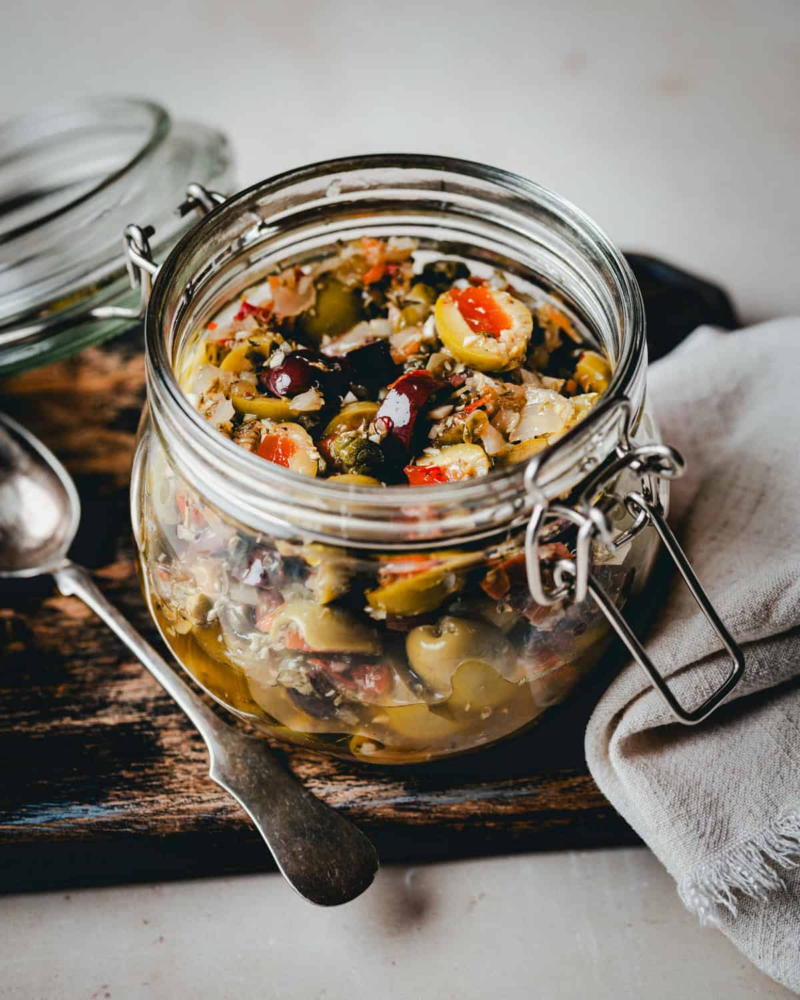

🫙 Jar Condiment · Makes ~1 litre · Keeps 3–4 weeks
Marinated Olive Salad
The Italian-style olive salad you used to buy — rebuilt with EVOO instead of seed oil. Every jar in the fridge that lists "vegetable oil," "soybean oil," or "canola oil" is delivering the wrong fat every time you eat it. This version uses the same vegetables (olives, pimento, cauliflower, carrot, celery, red bell pepper, capers, garlic) cut to the same fine dice, in the same vinegar brine — but preserved in cold-pressed extra-virgin olive oil. The difference isn't subtle: every spoonful now delivers EVOO polyphenols, olive hydroxytyrosol, caper quercetin, and acetic acid from the vinegar. You make one jar and have a condiment ready for 3–4 weeks. All six conditions.
APOE4
Celiac / GF
DP / Blood Sugar
Fatty Liver
MTHFR
Kidney Stone
EVOO solidifies in the cold fridge — this is how you know it's real. Remove 15 min before serving. Top up oil after each use to keep contents submerged.
🫒 Why replace the seed oil — the EVOO case
Every jar in the fridge with "vegetable oil" is working against the protocol
Commercial olive salads, antipasto mixes, giardiniera, and marinated vegetables almost universally use soybean, canola, or "vegetable" oil because it is cheaper and has a longer commercial shelf life. The problem for this protocol:- Seed oils are high in omega-6 linoleic acid — at the quantities consumed in a Western diet, excess omega-6 drives chronic low-grade inflammation via arachidonic acid pathways. This is directly counter to the APOE4 neuroinflammation goal and the fatty liver reduction goal.
- Seed oils have essentially no polyphenols — refined vegetable oils are stripped of any plant compounds during processing. EVOO contains oleocanthal (COX inhibitor, same mechanism as ibuprofen), oleacein, and hydroxytyrosol — compounds you want delivered with every meal, not absent from every meal.
- The vinegar brine does the preservation — the acidity prevents microbial growth. The EVOO is the flavour and nutrient delivery medium, not the preservative. Substituting EVOO for seed oil does not reduce shelf life.
- EVOO solidifies below ~10°C — that is the test — if olive oil in the fridge stays liquid, it has been adulterated with seed oil or is a light/refined olive oil with lower polyphenol content. Cold solidification is not a defect; it is evidence of authenticity. Let it come to room temperature before serving.
🧬 Per condiment serve (~60g / 3–4 tablespoons)
Approximate — varies with EVOO absorbed into vegetables
EVOO Polyphenols — oleocanthal, hydroxytyrosol
~15–25mg / serve
Therapeutic anti-inflammatory range — APOE4 neuroinflammation, hepatic inflammation in fatty liver
Quercetin (from capers) — anti-inflammatory, AMPK activator
~10–15mg / serve
Capers are the highest food source of quercetin by weight — relevant for fatty liver, APOE4, and insulin sensitivity
Acetic Acid (from vinegar) — same mechanism as ACV capsule
~0.5–1g / serve
Inhibits starch-digesting enzymes; taken with or before a meal it blunts glucose absorption — consistent with ACV protocol timing
Allicin (from garlic) — AMPK, glutathione, liver detox
Active per serve
Garlic is activated before adding — allicin formed, preserved in the acid-oil environment for weeks
Vitamin C (from bell pepper, pimento) — folate protection, MTHFR
~15–20% DV
Protects active folate from oxidative degradation — relevant for MTHFR where every unit of methylfolate counts
Monounsaturated Fat (EVOO) — APOE4 preferred lipid profile
~8–12g / serve
APOE4 carriers clear MUFA-rich lipoproteins more efficiently than saturated fat-derived ones; EVOO is the protocol fat of choice
Oxalate profile: Very low — olives (≈0), pimento (≈0), cauliflower (~2mg/100g), carrots (~3mg/100g), celery (~4mg/100g), bell pepper (~2mg/100g), capers (~0). At 60g per serve, total oxalate is approximately 2–3mg per serve. One of the lowest-oxalate condiments possible.
🧬 What each ingredient is doing
🫒 Olives — hydroxytyrosol + MUFA + oleuropein
Hydroxytyrosol is one of the most potent polyphenolic antioxidants in the food supply — significantly more bioavailable than curcumin and with strong blood-brain barrier crossing. Directly relevant to APOE4 amyloid-β inhibition and neuroinflammation. Olives also provide oleic acid (MUFA), the same fatty acid that gives EVOO its cardiovascular benefit. Mixing sizes — some whole for texture, some chopped to release flavour into the oil — is both traditional and practical.🫙 Capers — the highest quercetin food source
Capers contain ~234mg quercetin per 100g — dramatically higher than any other common food (the next highest is red onion at ~32mg/100g). Quercetin inhibits NLRP3 inflammasome activation (the same inflammatory pathway implicated in APOE4 neurodegeneration), activates AMPK (relevant for fatty liver and insulin resistance), and is one of the most studied compounds for reducing hepatic triglyceride accumulation. A tablespoon of capers delivers meaningful quercetin in a condiment that wasn't being thought of as therapeutic.🍷 Red wine vinegar — acetic acid exactly like ACV
The active compound in apple cider vinegar that makes it protocol-relevant is acetic acid — and red wine vinegar is also acetic acid. At 3 tablespoons in a 1-litre jar, every condiment serving delivers a small acetic acid dose that inhibits alpha-amylase and alpha-glucosidase (the starch-digesting enzymes), slowing glucose absorption from whatever meal it accompanies. Use the olive salad as a topping on a meal and you are getting the ACV mechanism passively. Red wine vinegar also contains small amounts of resveratrol and polyphenols from the source wine — additional minor benefit.🧄 Garlic — activated before acidifying
The allicin formation window (crush → 5-minute rest) is critical here because the vinegar environment will halt the alliinase enzyme reaction if garlic is added raw to acid. By activating the garlic first (crush, rest 5 min, then chop and add), the allicin is already formed before it contacts the acid. Once formed, allicin is stable in an acid-oil environment for weeks. Every jar you make is carrying weeks' worth of activated allicin.🫑 Pimento + red bell pepper — vitamin C + carotenoids
Roasted pimento and raw red bell pepper are among the highest vitamin C foods by weight. Vitamin C in this context does two things: protects active methylfolate from oxidative degradation (directly relevant for MTHFR), and enhances non-heme iron absorption when the salad is eaten alongside iron-containing foods. The red carotenoids (capsanthin in pimento, lycopene in the skin of red peppers) are fat-soluble and absorbed directly into the EVOO — making the oil around them a delivery vehicle, not just a medium.🥦 Cauliflower — sulforaphane precursors, zero oxalate
Cauliflower contains glucosinolates that are precursors to sulforaphane — an Nrf2 activator that upregulates the body's own antioxidant enzyme production (glutathione, superoxide dismutase, catalase). This is a different and complementary mechanism to the direct antioxidants elsewhere in this recipe. Cauliflower is also genuinely zero oxalate — important in a protocol managing kidney stones. The brief blanch (2 minutes) keeps it very crisp while removing the raw edge that makes it unpleasant over weeks in a jar.🫙 Ingredients & Method
🧾 Ingredients — makes ~1 litre jar
- Olives
- 200gMixed olives — 100g left whole or halved, 100g roughly chopped (kalamata + Castelvetrano or green mix)⬜ ~0mg
- Vegetables — fine 5mm dice
- 100gPimento strips or jarred roasted red pepper — fine dice⬜ ~1mg
- 150gCauliflower florets — blanch 2 min, fine dice⬜ ~2mg
- 100gCarrots — blanch 3 min, fine dice🟢 ~3mg
- 80gCelery (2 stalks) — fine dice, raw🟢 ~3mg
- 100gRed bell pepper — fine dice, raw⬜ ~1mg
- Flavour & Brine
- 3 tbspCapers — drained, roughly chopped⬜ ~0mg
- 4 clovesGarlic — crushed, 5-min rest, then finely chopped⬜ ~0mg
- 3 tbspRed wine vinegar⬜ ~0mg
- ½ tspDried oregano⬜ ~0mg
- ½ tspDried thyme⬜ ~0mg
- ¼ tspRed pepper flakes (optional)⬜ ~0mg
- ¼ tspBlack pepper, freshly ground⬜ ~0mg
- ½ tspSea salt — taste first (olives + capers are salty)⬜ ~0mg
- 1Bay leaf⬜ ~0mg
- To fill the jar
- 150–200mlCold-pressed EVOO — enough to fully submerge contents⬜ zero
Total oxalate per condiment serve (~60g): approximately 2–3mg — one of the lowest-oxalate condiments in the collection.
🔪 Method
-
1
Activate the garlic — do this firstCrush all 4 garlic cloves and set aside for 5 full minutes. The vinegar will stop allicin formation if garlic is added raw — activating first means the allicin is already formed before the acid contacts it. After 5 minutes, finely chop the activated garlic and set aside.
-
2
Blanch cauliflower and carrotBring a small pot of salted water to a boil. Add cauliflower and blanch 2 minutes exactly — still very firm. Remove to an ice-water bowl. Add carrots, blanch 3 minutes — just barely tender. Add to ice water. Once cool (2 min), drain both and pat dry on a clean towel.
-
3
Dice everything to a consistent 5mmCut blanched cauliflower and carrots, raw celery, raw red bell pepper, and pimento to approximately 5mm dice — roughly the size of a large caper. Roughly chop 100g of the olives to the same size; leave the other 100g whole or halved. Roughly chop the drained capers.
-
4
Combine and seasonIn a large bowl, combine all the diced vegetables, both olive preparations, capers, and activated garlic. Add the red wine vinegar, oregano, thyme, red pepper flakes, and black pepper. Toss well. Taste before adding salt — the olives and capers will have already seasoned the mixture significantly.
-
5
Pack the jarSpoon into a clean 1-litre glass jar with a tight-fitting lid. Press down gently after each addition to remove air pockets. Tuck the bay leaf along the side. Leave about 2cm of space at the top.
-
6
Cover with EVOO and sealPour EVOO slowly over the mixture until everything is submerged by at least 1cm. If the vegetables rise above the oil as you pour, press them down gently. Seal the jar and refrigerate for at least 4 hours — overnight is significantly better as the flavours meld.
-
7
Serve and maintainRemove jar 15 min before serving to allow EVOO to soften. Use a clean spoon always. After each use, drizzle a little fresh EVOO to keep the vegetables submerged. If the oil level drops below the vegetable line, top up. Keeps 3–4 weeks refrigerated.
Why EVOO solidifies in the fridge: Real cold-pressed extra-virgin olive oil contains a high proportion of oleic acid (monounsaturated) and small amounts of saturated fats — these solidify below ~10°C. Adulterated "olive oil" blended with seed oil, or highly refined olive oil, stays liquid. Solidification in the fridge is the simplest authenticity test for your EVOO.
✅ Refrigerator storage — 3 to 4 weeks
The vinegar brine (acidity) combined with salt and refrigeration is sufficient preservation. The EVOO layer prevents air contact at the surface. Use a clean spoon every time — introducing bacteria from a used utensil is the primary risk in any preserved food. If you see any cloudiness in the oil or an off smell, discard and make a fresh jar.⚠️ Salt check — olives and capers vary widely
Different olive brands and caper brands vary enormously in their salt content. Before adding the ½ tsp salt in the recipe, taste the mixture. Some combinations of salt-packed capers + brined olives will not need any additional salt at all. Start with no added salt, taste, and add only if needed. This is especially relevant if you are watching sodium for blood pressure alongside the triglyceride work.🫙 How to use it — condiment applications
- On cassava crackers or GF sourdough toast: Spoon 2–3 tbsp onto a cracker with labneh or a slice of GF sourdough. The EVOO soaks into the bread or cracker and the acetic acid from the vinegar delivers the pre-meal ACV benefit if eaten before a larger meal.
- As a muffuletta-style sandwich layer: Spread generously inside a GF roll or wrap with deli turkey, thinly sliced provolone, and baby greens. The olive salad is the dressing, condiment, and vegetable layer in one.
- Alongside labneh: Spoon the olive salad over a bowl of plain labneh with EVOO. The fat in the labneh and the EVOO together make this a fully satisfying small meal or substantial snack. All six conditions.
- On eggs: A spoonful over fried or scrambled eggs adds flavour, polyphenols, and the acetic acid mechanism without requiring any additional prep time in the morning.
- As an antipasto platter element: Serve alongside GF crackers, labneh, a few cassava rice paper squares, olives, and sliced cucumber for a no-cook platter meal. Visually impressive, therapeutically dense.
- Tossed into a grain bowl: A large spoonful stirred into millet, rice, or quinoa adds EVOO, flavour, and all the polyphenols directly to the grain. The EVOO emulsifies slightly with the warm grain and makes a loose dressing.
- Refrigerator reset strategy: Any time a store-bought condiment runs out, check the label before repurchasing. If it lists seed oil, make this instead. One batch replaces weeks of a store-bought product.